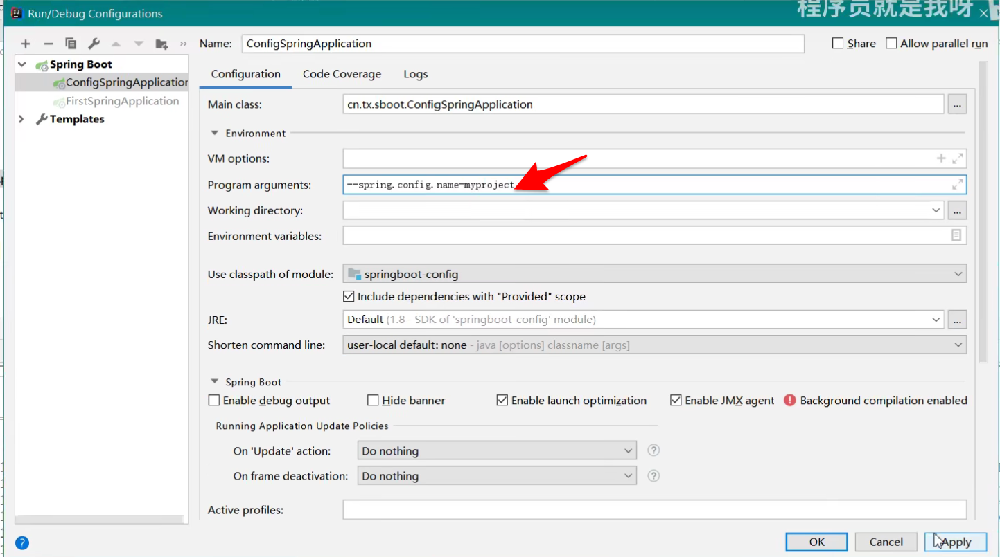

一、配置文件的位置：
springboot 启动会扫描以下位置的application.properties或者application.yml文件作为Spring boot的默认配置文件
-file:./config/
-file:./（-file 表示项目的根路径，如果当前项目有父工程，配置文件要放在父工程的根路径，放在项目的根路径配置文件不会被扫描；如果项目没有父工程，则需要放在项目的根路径，-file:./config/ 同理）
-classpath:/config/
-classpath:/
优先级由高到低，高优先级的配置会覆盖低优先级的配置；
SpringBoor 会从这四个位置全部加载主配置文件；互补配置；
如果配置文件的名字不叫application.properties或者application.yml，可以通过以下的参数来指定配置文件的名字，myproject是配置文件名。
java -jar myproject.jar --spring.config.name=myproject

指定其他位置的配置文件：
java -jar myproject.jar
--spring.config.location=classpath:/default.properties,classpath:/override.properties,D:/default.properties
springboot配置文件支持两种后缀，一种是 properties，存储格式key=value；另一种是yml。
二、yaml
yml是YAML语言的文件，以数据为中心，比properties xml等更适合做配置文件。
yml和xml相比，少了一些结构化的代码，使数据更加直接，一目了然；
相比于properies文件更加简介，properties key层级的表现比较繁琐，例如：
2、1 yaml语法
以空格的缩进程度来控制层级关系。空格的个数并不重要，只要左边空格对齐则视为是同一个层级。且大小写敏感。支持字面量，对象，数组三种数据结构，也支持复合结构。
（key: value 冒号后面必须有一个空格）
1、字面量：字符串，布尔类型，数值，日期。字符串默认不加引号，单引号会转义特殊字符。日期格式支持yyyy/MM/dd HH:mm:ss
2、对象：由键值对组成，形如key: value的数据组成。冒号后面的空格必须要有的，每组键值对占用一行，且缩进的程度要一致，也可以使用行内写法：{k1: v1,...kn: vn}
3、数组：由形如 -（空格）value 的数据组成。短横线后面的空格是必须要有的，每组数据占用一行，且缩进的程度要一致，也可以使用行内写法：[1,2,...n]
4、复合结构：上面三种数据类型任意组合
2、2 yaml的属性绑定
属性绑定：将yml文件中的属性绑定到程序中。
为了让当前的实体类能在配置文件中有对应的提示，需要引入下面的依赖
<dependency>
<groupId>org.springframework.boot</groupId>
<artifactId>spring-boot-configuration-processor</artifactId>
<optional>true</optional>
</dependency>
属性的注入采用的是set/get方法。
yml:
注解：
@Component
@ConfigurationProperties("yml")
public class text(){
}
在属性绑定的方式里，是通过set方法来完成的，可以借助Lombok带来方便。
2、3 Lombok
第一步：在父工程中引入Lombok的依赖：
<dependency>
<groupId>org.projectlombok</groupId>
<artifactId>lombok</artifactId>
<version>1.18.20</version>
</dependency>
Lombok的原理：
自从Java 6起，javac就支持“JSR 269 Pluggable Annotation Processing API”规范，只要程序实现了该API，就能在javac运行的时候得到调用。
Lombok就是一个实现了"JSR 269 API"的程序。在使用javac的过程中，它产生作用的具体流程如下：
1. javac对源代码进行分析，生成一棵抽象语法树(AST)
2. javac编译过程中调用实现了JSR 269的Lombok程序
3. 此时Lombok就对第一步骤得到的AST进行处理，找到Lombok注解所在类对应的语法树 (AST)，然后修改该语法树(AST)，增加Lombok注解定义的相应树节点
4. javac使用修改后的抽象语法树(AST)生成字节码文件
Lombok注解的使用
POJO常用注解：
@Getter/@Setter: 作用类上，生成所有成员变量的getter/setter方法；作用于成员变量上，生成该成员变量的getter/setter方法。可以设定访问权限及是否懒加载等。
@ToString：作用于类，覆盖默认的toString()方法，可以通过of属性限定显示某些字段，通过exclude属性排除某些字段。
@EqualsAndHashCode：作用于类，覆盖默认的equals和hashCode
@NonNull：主要作用于成员变量和参数中，标识不能为空，否则抛出空指针异常。
@NoArgsConstructor, @RequiredArgsConstructor, @AllArgsConstructor：作用于类上，用于生成构造函数。有staticName、access等属性。
staticName属性一旦设定，将采用静态方法的方式生成实例，access属性可以限定访问权限。
@NoArgsConstructor：生成无参构造器；
@RequiredArgsConstructor：生成包含final和@NonNull注解的成员变量的构造器；
@AllArgsConstructor：生成全参构造器
@Data：作用于类上，是以下注解的集合：@ToString @EqualsAndHashCode @Getter @Setter @RequiredArgsConstructor
@Builder：作用于类上，将类转变为建造者模式
@Log：作用于类上，生成日志变量。针对不同的日志实现产品，有不同的注解：
@Cleanup：自动关闭资源，针对实现了java.io.Closeable接口的对象有效，如：典型的IO流对象
@SneakyThrows：可以对受检异常进行捕捉并抛出
为什么maven中加入lombok依赖后，还需要安装插件？
答：因为lombok的引入使得java文件使用javac编译成字节码文件中包含get set函数,但是源代码中找不到定义，IDE会认为这是错误，因此需要安装一个lombok的插件。
idea安装 Lombok插件：略。
2、4 构造器绑定
@ConstructorBinding表示不采用属性绑定（set方法），采用构造器绑定（需要提供构造方法）。
@ConfigurationProperties("yml")
@ConstructorBinding
public class Text{}
需要在控制类上加注解
@EnableConfigurationProperties(Text.class)
注：在属性绑定的时候，也可以不使用@Component，使用@EnableConfigurationProperties(Text.class)，但是构造器绑定只能选择@EnableConfigurationProperties(Text.class)。
如果一个配置类只配置@ConfigurationProperties注解，而没有使用@Component，那么在IOC容器中是获取不到properties配置文件转化的bean。说白了@EnableConfigurationProperties相当于把使用@ConfigurationProperties的类进行启用注入。
注：用@EnableConfigurationProperties(Text.class)修饰的类中如果含有Text的成员变量和该变量的构造方法，则该Text变量可以有spring进行构造注入。（解释了SpringBoot中的自动配置类中的获取配置文件属性的成员变量（有@ConfigurationProperties("yml")修饰的类）的注入问题）
2、5 @ConfigurationProperties注解在配置类中的应用
查看elasticsearch的自动装配：


采用的是属性绑定。
关于spring boot 自动配置的一些理解：
spring boot的自动配置需要具备大量技术的核心支持， Pivotal公司为了推广spring boot ，维护了很多技术在spring boot 中的自动装配，但是，因为技术的更新换代是很快的，所以对于Pivotal公司的压力是很大的。设想，如果Pivotal不去做自动装配，市面上的主流框架都是SSM和其他框架，而spring boot只适用于新的项目，人们往往会选择绝大多数选择SSM，而不去选择spring boot。但是，当spring boot 真正流行起来之后，各个技术公司应该会抢着帮Pivotal公司做自动装配。（就像java的JDBC接口）
2、6 springboot2.2.1的新特性
在之前的版本都是使用@Configuration来进行作为配置类，从Springboot2.2.1.RELEASE版本开始不需要添加@Configuration。可以在扫描范围的bean内部之间定义bean。
@Bean是一个方法级别上的注解，主要用在@Configuration注解的类里，也可以用在@Component注解的类里。添加的bean的id为方法名。@Configuration和@Bean的配合使用可以实现注解代替配置文件的作用。
@Configuration
public class AppConfig {
@Bean
public TransferService transferService() {
return new TransferServiceImpl();
} }
相当于
<beans>
<bean id="transferService" class="com.acme.TransferServiceImpl"/>
</beans>
以前@Bean只能在@Configuration修饰的类中（配置类）或者@Component修饰的类中，现在可以在任意被spring容器管理的类中定义bean。
例如：
@RestController
public class UsersCollector {
@Autowired
Users users;
@Bean public TransferService transferService() { return new TransferServiceImpl(); }
@RequestMapping("users")
public Users text(){
return users;
}
}
@Component与@bean的区别：
这两个注解的作用：
@Component注解表明一个类会作为组件类，并告知Spring要为这个类创建bean。
@Bean注解告诉Spring这个方法将会返回一个对象，这个对象要注册为Spring应用上下文中的bean。通常方法体中包含了最终产生bean实例的逻辑。
两者的目的是一样的，都是注册bean到Spring容器中。区别在于：
@Component（@Controller、@Service、@Repository）通常是通过类路径扫描来自动侦测以及自动装配到Spring容器中。
而@Bean注解通常是我们在标有该注解的方法中定义产生这个bean的逻辑。@Bean的用途则更加灵活当我们引用第三方库中的类需要装配到Spring容器时，则只能通过@Bean来实现。
总结：@Component和@Bean都是用来注册Bean并装配到Spring容器中，但是Bean比Component的自定义性更强。可以实现一些Component实现不了的自定义加载类。
2、7 第三方组件注入
除了使用@ConfigurationProperties注释类之外，还可以在public@Bean方法上使用它，如果要将属性绑定到不在控制范围的第三方组件。
@Component
pubic class MyService{
@Bean
@ConfigurationProperties()
public AnotherComponent getAnotherComponent(){
return new AnotherComponent();
}
}
2、8 配置的松散绑定

注：在属性类中，前缀不可以驼峰模式，只能用羊肉串模式，但是yml中可以用驼峰模式来配置。
2、9 属性绑定的校验
Spring Boot在需要校验@ConfigurationProperties修饰的类（属性类），可以使用Spring的注解@Vlidated，它会使用 JSR-303 javax.validation。
在使用@Validated注释对@ConigurationProperties类进行注释时，Spring boot就会尝试校验它们。可以用JSR-303 javax.validation直接在配置类上的约束注释。为此，需要确保类路径上有一个兼容的JSR-303实现，然后将约束注释添加到字段中。
1、引入依赖（hibernate依赖）
<dependency>
<groupId>org.hibernate</groupId>
<artifactId>hibernate-validator</artifactId>
<version>5.2.0.Final</version>
</dependency>
2、添加@Validated进行校验
@Data
@Component
@ConfigurationProperties("yml")
public class text(){
@NotNull
private String firstName;
@Max(35)
Private int age;
@Email
private String email;
}
2、10 属性绑定校验关联类
@Data
@Component
@ConfigurationProperties("yml")
public class text(){
@NotNull
private String firstName;
@Max(35)
Private int age;
@Email
private String email;
@Valid
private School school=new School();
@Data
class School{
@NotNull
String SchoolName;
}
}
注：为了确保内部类对象得到校验，需要在其对象上加入注解@Valid
2、11 @ConfigurationProperties和@Value对比

@Data
@Component
public class ValueProperties{
@Value("${acme.my-person.persion.firstName}")
priavte String firstName;
private int age;
private String email;
}
@Value只能绑定单个属性，@ConfigurationProperties可以绑定属性类中的所有属性。
@Value的松散绑定是被限制的，@Value("{demo.item-price}")可以绑定 dome.item-price 和 demo.itemPrice，推荐都使用羊肉串模式。
元数据：在classpath路径下会生成一个所有读取到配置文件属性的json文件（spring-configuration-metadata.json）,目的是为了书写配置文件时的提示。
spEL表达式：
@value("{#12*3}")
2、12 Yaml文件的profile用法
acme:
enable:true
---
acme:
enable:false
---
acme:
enable:true
这样获取到的是最下面的Domcument，默认把上面的覆盖了。
需要指定选择的Domcument
现在选择的就是默认的文档：
acme:
enable:true
# 默认文档
spring:
profiles:default
---
acme:
enable:false
# 开发文档
spring:
profiles:dev
---
# 运行文档
acme:
enable:true
spring:
profiles:pro
在配置文件中指定选择文档：
acme:
enable:true
spring:
profiles:default
active:pro
---
acme:
enable:false
# 开发文档
spring:
profiles:dev
---
# 运行文档
acme:
enable:true
spring:
profiles:pro
在参数中进行配置

注：配置文件中设置的属性，都可以在参数中进行配置，并且参数的优先级高于配置文件，但参数的可读性确远远不如配置文件。
也可以使用多个名称不同的配置文件：
application-dev.yml
application-pro.yml
在参数中设置启用的配置文件

配置文件支持EL表达式
acme:
enabled: true
remote-address: 192.168.0.110
host: ${acme.remote-address}:8080